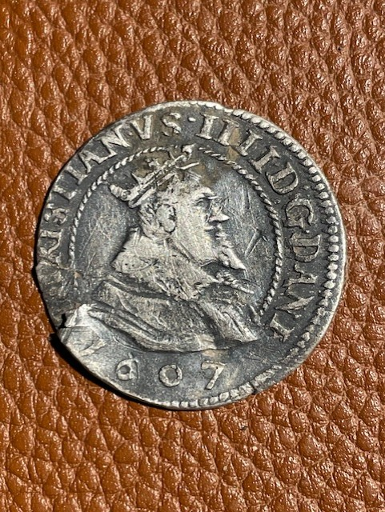
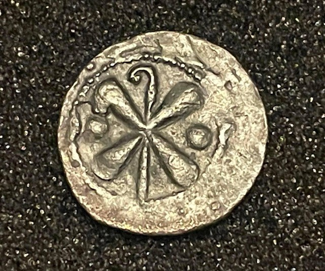
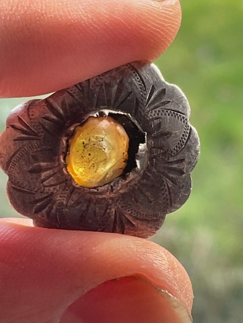
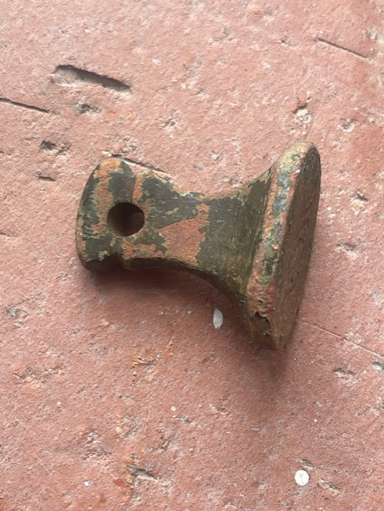

History Unearthed
Every signal tells a story. DigQuest documents the search for artefacts, coins, and relics — connecting the present with the past.

King Christian IV 8 Skilling coin 1607
Type: Coin
Age: 1607
Ruler: Christian IV, King of Denmark and Norway (reigned 1588–1648)
Denomination: 8 skilling, equal to half a mark
Material: Silver, about .888 fine
Standard weight and size: about 2.9 g and 25 mm
Shows the crowned bust of the king with the date below. This portrait type of 8 skilling was struck in the years around 1606–1608 and is catalogued as Hede 93A and KM 32. Christian IV was Denmark's longest-reigning monarch and is remembered for his building projects in Copenhagen, including Rosenborg Castle, the Round Tower and the Stock Exchange (Børsen).

Hermann II von Katzenelnbogen Silver Pfennig
Type: Coin
Age: 1174–1203
Issuer: Hermann II of Katzenelnbogen, Bishop of Münster (about 1174–1203)
Denomination: Pfennig (silver penny)
Material: Silver, hammered
Hermann II was the son of Count Heinrich II of Katzenelnbogen and was chosen as bishop by Emperor Frederick Barbarossa around 1174. He served the Empire as a diplomat and took part in Barbarossa's crusade of 1189–1190, during which he was held prisoner in Constantinople for about four months. He later served as chancellor to Otto IV.
He founded the abbeys of Langenhorst (1178) and Marienfeld (1185) and gave town rights to Coesfeld, Warendorf and Bocholt. He died at Marienfeld Abbey in June 1203.

Silver Brooch
Type: Jewellery
Age: Early 20th Century

Metal Stamp
Type: Tool
Age: 1700s
Object: Seal matrix (hand seal)
Material: Probably copper alloy
Engraving: Cursive monogram, read as "MCR"
Used to press its owner's initials into warm wax to seal letters and documents. Seal designs were normally cut in mirror image so that the wax impression reads the right way round. The hole through the handle would have let it hang from a cord or chain.